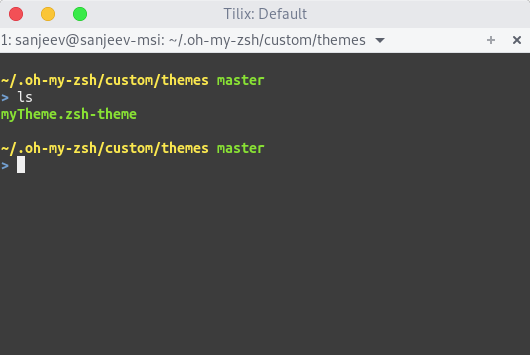

Dropdown terminal Link to heading
It seems Guake is an obvious choice for everyone, but Tilix gives terminator features of splitting a window with flavor of Guake.
yaourt -S tilix-bin
To use tilix as a dropdown terminal, you need to setup a key with tilix -q as action.
Install zsh Link to heading
sudo pacman -S zsh
Install git Link to heading
sudo pacman -S git
Setup oh-my-zsh Link to heading
wget https://github.com/robbyrussell/oh-my-zsh/raw/master/tools/install.sh -O - | zsh
chsh -s `which zsh`
ZSH Theme Link to heading
I am using a custom theme inspired from juanghurtado.
# Color shortcuts
RED=$fg[red]
YELLOW=$fg[yellow]
GREEN=$fg[green]
WHITE=$fg[white]
BLUE=$fg[blue]
RED_BOLD=$fg_bold[red]
YELLOW_BOLD=$fg_bold[yellow]
GREEN_BOLD=$fg_bold[green]
WHITE_BOLD=$fg_bold[white]
BLUE_BOLD=$fg_bold[blue]
RESET_COLOR=$reset_color
# Format for git_prompt_info()
ZSH_THEME_GIT_PROMPT_PREFIX=""
ZSH_THEME_GIT_PROMPT_SUFFIX=""
# Format for parse_git_dirty()
ZSH_THEME_GIT_PROMPT_DIRTY=" %{$RED%}(*)"
ZSH_THEME_GIT_PROMPT_CLEAN=""
# Format for git_prompt_status()
ZSH_THEME_GIT_PROMPT_UNMERGED=" %{$RED%}unmerged"
ZSH_THEME_GIT_PROMPT_DELETED=" %{$RED%}deleted"
ZSH_THEME_GIT_PROMPT_RENAMED=" %{$YELLOW%}renamed"
ZSH_THEME_GIT_PROMPT_MODIFIED=" %{$YELLOW%}modified"
ZSH_THEME_GIT_PROMPT_ADDED=" %{$GREEN%}added"
ZSH_THEME_GIT_PROMPT_UNTRACKED=" %{$WHITE%}untracked"
# Format for git_prompt_ahead()
ZSH_THEME_GIT_PROMPT_AHEAD=" %{$RED%}(!)"
# Format for git_prompt_long_sha() and git_prompt_short_sha()
ZSH_THEME_GIT_PROMPT_SHA_BEFORE=" %{$WHITE%}[%{$YELLOW%}"
ZSH_THEME_GIT_PROMPT_SHA_AFTER="%{$WHITE%}]"
# Prompt format
PROMPT='
%{$GREEN_BOLD%}%{$YELLOW%}%~%u$(parse_git_dirty)$(git_prompt_ahead)%{$RESET_COLOR%} %{$GREEN_BOLD%}$(git_current_branch)
%{$BLUE%}>%{$RESET_COLOR%} '
